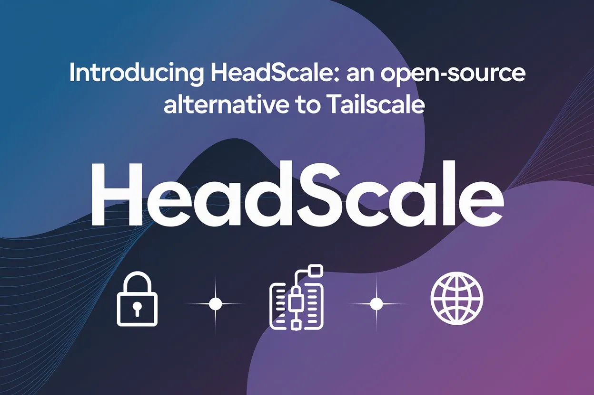
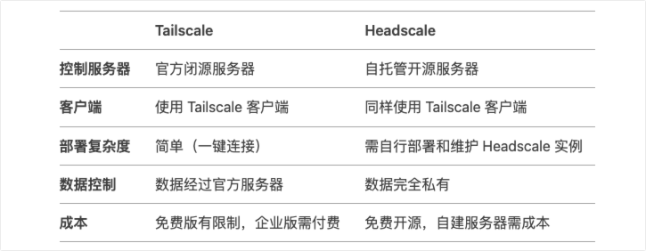

Headscale：Tailscale 控制服务器的开源替代方案！
Tailscale 是一个基于 WireGuard 协议的商业 VPN 服务，提供简单、安全的组网功能，支持跨设备、跨网络的点对点连接。虽然客户端开源，但核心控制服务器(Control Plane)是闭源的。
Headscale 是一个开源项目，它实现了 Tailscale 控制平面的核心功能。简单来说，Tailscale 使用云托管的控制服务器来管理设备间的安全连接，而 Headscale 则允许你自己搭建并管理这一控制服务器，从而实现自托管的 Tailscale 网络环境。这对于那些希望拥有更多控制权、数据隐私或不依赖第三方服务的用户来说，是一个非常有吸引力的替代方案。

1. 工具介绍
介绍该工具的有点和特性
Headscale 是一个开源的的 Tailscale 控制服务器，由欧洲航天局的 Juan Font 使用 Go 语言开发。在 BSD 许可下发布，实现了 Tailscale 控制服务器的所有主要功能，并且可以部署在企业内部。
Headscale 设计的主要目的，就是为了提供一个 Tailscale 控制服务器替代产品，其没有设备数量限制，并且所有网络流量都由你自己控制。你可以把它看作是一个更灵活、更可定制化的 Tailscale 替代品。

2. 功能特点
列举该工具的主要功能和特点
- 优势特点
完全开源：你可以自由查看和修改源代码，满足个性化需求。无设备限制：不像 Tailscale 免费版有设备数量限制，Headscale 可以连接任意数量的设备。可定制化：可以根据自己的需求进行配置和扩展。社区活跃：有一个活跃的社区，可以提供帮助和支持。
- 主要功能
设备管理：添加、删除、管理网络中的设备。ACL控制：设置访问控制列表，控制设备之间的访问权限。路由配置：配置网络路由，实现设备之间的互联。DERP节点：支持 DERP 节点，用于内网穿透。Web UI：提供一个简单的 Web 界面，方便管理。
- 应用场景
家庭网络：建立一个安全的家庭网络，实现设备之间的互联。企业内网：为企业构建一个私有网络，实现远程办公。云服务器管理：管理多个云服务器，实现统一配置和管理。
3. 准备工作
这里简单了解下，部署服务需要准备的环境和资源。
首先，需要一个配置了公网 IP 地址(IPv4/IPv6)的 Linux 服务器。其次，还需要开通 443 端口以备 Headscale 服务部署使用。然后，最好新建一个 headscale 的用户来运行服务。
# 默认用户名称
/usr/bin/headscale
# 默认配置文件
/etc/headscale/config.yaml
# 默认数据目录
/var/lib/headscale
# 默认数据库
/var/lib/headscale/db.sqlite
# 推荐操作系统
Debian/Ubuntu
4. 配置文件
配置文件可以参考 Github 仓库或者官方文档中，查看对应配置具体含义。
安装完成以后，我们需要在 /etc/headscale/config.yaml 中配置 Headscale 的启动配置，以下为配置样例以及解释，仅列出重要配置。
# Headscale服务器的访问地址
# /etc/headscale/config.yaml
# 客户端需要连接和注册的地址
# https://myheadscale.example.com:443
server_url: http://127.0.0.1:8080
# Headscale实际监听的地址
listen_addr: 127.0.0.1:8080
# metric监控地址
metrics_listen_addr: 127.0.0.1:9090
# grpc监听地址
grpc_listen_addr: 127.0.0.1:50443
# 是否允许不安全的grpc连接(非TLS)
grpc_allow_insecure: false
# 客户端分配的内网网段
prefixes:
v6: fd7a:115c:a1e0::/48
v4: 100.64.0.0/10
allocation: sequential
# 中继服务器相关配置
derp:
server:
# 关闭内嵌的derper中继服务
enabled: false
region_id: 999
region_code: "headscale"
region_name: "Headscale Embedded DERP"
stun_listen_addr: "0.0.0.0:3478"
ipv4: 1.2.3.4
ipv6: 2001:db8::1
# 下发给客户端的中继服务器列表
urls:
- https://controlplane.tailscale.com/derpmap/default
# 可以在本地通过yaml配置定义自己的中继接待
paths: []
auto_update_enabled: true
update_frequency: 24h
database:
type: sqlite
debug: false
sqlite:
path: /var/lib/headscale/db.sqlite
write_ahead_log: true
# 使用自动签发证书是的域名
tls_letsencrypt_hostname: ""
# 使用自定义证书时的证书路径
tls_cert_path: ""
tls_key_path: ""
# 是否让客户端使用随机端口(默认使用41641/UDP)
randomize_client_port: false
5. 服务安装
安装服务
推荐使用容器化部署服务，会方便很多。但是如果需要直接在服务器上面部署服务，也推荐直接通过 apt 安装 .deb 包的方式，这样省去了创建配置文件、服务启动配置、默认数据库和用户等繁琐的步骤。
- Using packages for Debian/Ubuntu
# 下载最新版本
$ HEADSCALE_VERSION="0.25.0"
$ HEADSCALE_ARCH="amd64"
$ wget --output-document=headscale.deb \ "https://github.com/juanfont/headscale/releases/download/v${HEADSCALE_VERSION}/headscale_${HEADSCALE_VERSION}_linux_${HEADSCALE_ARCH}.deb"
# 安装服务
$ sudo apt install ./headscale.deb
# 编辑配置文件
$ sudo vim /etc/headscale/config.yaml
# 启动服务
$ sudo systemctl enable --now headscale
$ sudo systemctl status headscale
# 查看占用端口
$ sudo ss -tulnp | grep headscale
- Using standalone binaries
# 二进制文件下载
$ HEADSCALE_VERSION="0.25.0"
$ HEADSCALE_ARCH="amd64"
$ sudo wget --output-document=/usr/local/bin/headscale \
https://github.com/juanfont/headscale/releases/download/v${HEADSCALE_VERSION}/headscale_${HEADSCALE_VERSION}_linux_${HEADSCALE_ARCH}
# 复制可执行权限
$ sudo chmod +x /usr/local/bin/headscale
# 创建用户
$ sudo useradd --create-home \
--home-dir /var/lib/headscale/ \
--system --user-group --shell /usr/sbin/nologin \
headscale
# 修改配置文件
# https://github.com/juanfont/headscale/raw/main/config-example.yaml
$ sudo mkdir -p /etc/headscale
$ sudo vim /etc/headscale/config.yaml
base_domain: headscale.escape.cloud
listen_addr: 127.0.0.1:8181
# 制作启动脚本
https://headscale.net/stable/packaging/headscale.systemd.service
# 启动服务
$ systemctl daemon-reload
$ systemctl enable --now headscale
$ systemctl status headscale
# 查看占用端口
$ sudo ss -tulnp | grep headscale
6. 容器部署
使用容器部署服务
- docker
# 创建配置文件
$ mkdir -pv ./headscale/config && cd ./headscale
# 启动服务
$ docker run --name headscale --detach \
--volume "$(pwd)/config:/etc/headscale/" \
--publish "127.0.0.1:8080:8080" \
--publish "127.0.0.1:9090:9090" \
headscale/headscale:<VERSION> serve
# 查看日志
$ docker ps
$ docker logs --follow headscale
# 确保可用
$ curl http://127.0.0.1:9090/metrics
- docker-compose
services:
headscale:
restart: unless-stopped
container_name: headscale
image: headscale/headscale:<VERSION>
ports:
- "127.0.0.1:8080:8080"
- "127.0.0.1:9090:9090"
volumes:
- "$(pwd)/config:/etc/headscale"
command: serve
7. 注册流程
介绍如何将本地机器纳管到 headscale 服务中。
- 使用方式
通过 tailscale 官方客户端下载，自己需要客户端即可。桌面端的话，需要通过命令进行注册，成功后才可以访问。当然，如果是手机端或者提供了桌面应用的话，双击添加服务器地址，即可。
# install with one command
$ curl -fsSL https://tailscale.com/install.sh | sh
- 注册机器 - 自生成
# 命令行添加
$ tailscale login --login-server <YOUR_HEADSCALE_URL>
YOUR_MACHINE_KEY
# 创建用户
$ headscale users create my_first_user
$ headscale nodes register --user my_first_user --key <YOUR_MACHINE_KEY>
- 注册机器 - 预设值
# 生成一个预设Key
$ headscale preauthkeys create --user my_first_user --reusable --expiration 24h
YOUR_AUTH_KEY
# 用户注册使用预设值
$ tailscale up --login-server <YOUR_HEADSCALE_URL> --authkey <YOUR_AUTH_KEY>
- 调试的话，可以使用
debug的镜像
$ docker run -it headscale/headscale:x.x.x-debug sh
8. 命令管理
介绍 headscale 命令的具体使用方式。
- 帮助信息
# 帮助信息
$ headscale help
# 查询特殊的帮助信息
$ headscale <COMMAND> --help
- 用户管理
# 创建用户
$ headscale users create <USER>
# 列出现有用户
$ headscale users list
# 删除现有用户
$ headscale users destroy <USER>
- 节点管理
# 查看节点
$ headscale nodes list
# 注册节点
$ headscale nodes register --user <USER> --key <KEY>
# 删除节点
$ headscale nodes destroy <NODE_ID>
# 移动节点
$ headscale nodes remove <NODE_ID> --user <USER>
# 重命名节点
$ headscale nodes rename <NODE_ID> <NEWLINE_NAME>
9. 远程管理
介绍如何使用 headscale 远程管理机器。
远程控制需要开启 remote CLI 功能，必须开启 headscale 服务器内置的 tls 支持，通过 nginx 反代实现的 ssl 是不行的。
- 修改配置文件
$ cat /etc/headscale/config.yaml
# 启用TLS
tls_cert_path: ""
tls_key_path: ""
# 需要ACME申请证书
tls_letsencrypt_hostname: ""
tls_letsencrypt_listen: ":http"
tls_letsencrypt_cache_dir: ".cache"
tls_letsencrypt_challenge_type: HTTP-01
# 启用gRPC
grpc_listen_addr: 0.0.0.0:50443
grpc_allow_insecure: false
- 创建APIKey
# 创建
$ headscale apikeys create --expiration 180d
# 列表
$ headscale apikeys list
# 吊销
$ headscale apikeys expire --prefix "<PREFIX>"